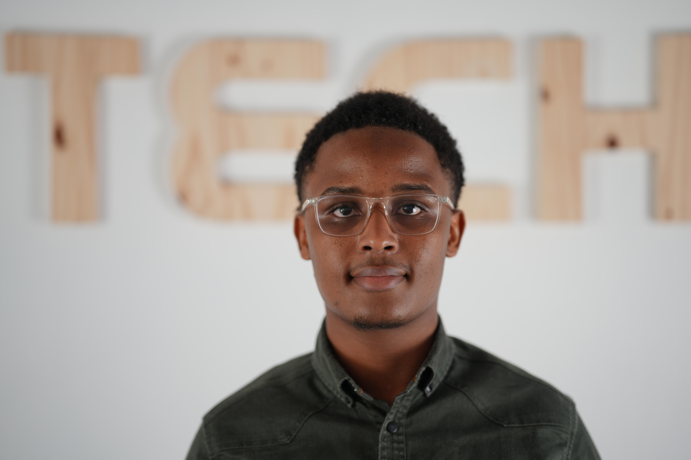

Abdou Aziz Daback Ba
Étudiant en informatique - Epitech Rennes
Téléphone : +33 06 XX XX XX XX
Email : abdou-aziz-daback.ba@epitech.eu
Adresse : Rennes
Étudiant en informatique - Epitech Rennes
Téléphone : +33 06 XX XX XX XX
Email : abdou-aziz-daback.ba@epitech.eu
Adresse : Rennes